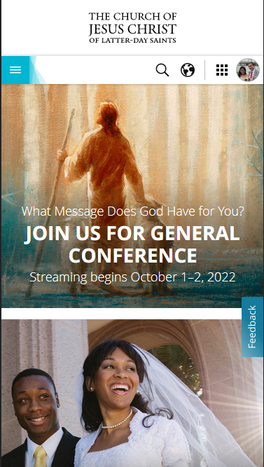

Contrast

This website makes great use of contrast. Normally the page is a very consistent dark blue. However, due to special circumstances, there is now a bright red bar at the top show how important the notice is.
Repetition

This home page has a very consistent layout that repeats for most of the page in the form of news and article tiles.
Proximity
This screenshot illustrates a good use of proximity. In the screenshot, we see a distinct coloring and a border around everything that has to do with repositories. Further down the same is seen for account README, links for VS Code integration and GitHub Desktop.